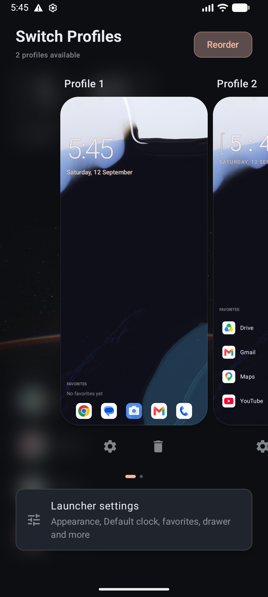

Facet Launcher is a fast, minimal Android home screen that adapts to how you actually use your phone — work, personal, focus — each its own profile.
Up to 3 full personas — each with its own apps, dock, clock, and calendar — switched with a swipe.
From minimal typography to shape-based faceted marks, each fully re-themeable.
List or grid, an alphabet rail, and search across apps and contacts.
A dedicated space for widgets — drag, resize, and arrange freely.
Set up a Work profile with only the apps you need at your desk. A Personal profile with everything else. A Focus profile with almost nothing at all. Swipe to browse live previews of each, tap to switch instantly.
Every profile can override its own apps list, dock, clock style, and calendar — or simply inherit the defaults.

Facet Launcher is in active development. Follow along or try it now on GitHub.